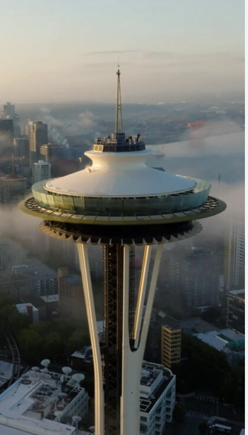
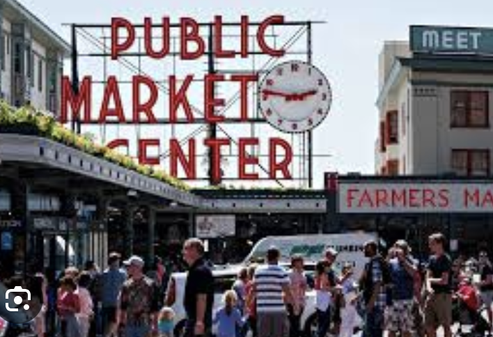
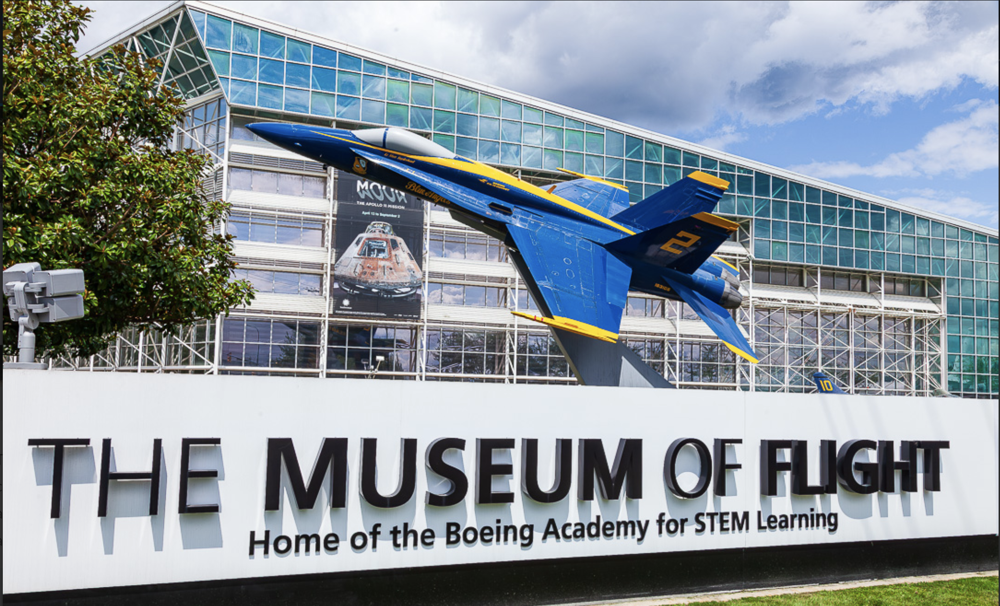

From the Space Needle to Pike Place Market and the Museum of Flight, there are many exciting activities to do in Seattle. Whether you enjoy sightseeing, shopping, or learning about history, Seattle has something for everyone.

The Space Needle is one of the most recognizable landmarks in the United States and a symbol of the city of Seattle. It was built for the Century 21 Exposition and officially opened in 1962. Standing 605 feet (184 meters) tall, the Space Needle was designed to represent the future and innovation. Visitors can take high-speed elevators to the observation deck, where they enjoy panoramic views of the city, Puget Sound, Mount Rainier, and the surrounding mountains on clear days. Today, the Space Needle remains one of Seattle's most popular tourist attractions, welcoming millions of visitors each year. In 2018, it underwent a major renovation that added floor-to-ceiling glass walls and a rotating glass floor called The Loupe, giving guests a unique view straight down to the ground below. The landmark continues to represent creativity, engineering, and the spirit of exploration, making it an important part of Seattle's history and culture.

Pike Place Market is one of Seattle's most famous attractions and one of the oldest continuously operating public farmers markets in the United States. Opened in 1907, the market is located near Seattle's waterfront and is home to hundreds of local farmers, artists, restaurants, and small businesses. Visitors can shop for fresh produce, seafood, handmade crafts, flowers, and unique gifts while enjoying the lively atmosphere. The market is also well known for its fish vendors, who entertain crowds by tossing fish across the counter before wrapping customers' orders. With its rich history, delicious food, and beautiful views of Elliott Bay, Pike Place Market is a must-visit destination for anyone exploring Seattle.

The Museum of Flight is one of the largest air and space museums in the world and is a must-see attraction in Seattle. Located near Boeing Field, the museum features more than 175 aircraft and spacecraft, including historic military planes, commercial airliners, and spacecraft from NASA. Visitors can explore interactive exhibits, learn about the history of aviation, and even step aboard famous aircraft such as the first Air Force One jet and a retired Concorde. The Museum of Flight offers hands-on activities and educational programs for all ages, making it an exciting destination for families, students, and anyone interested in aviation and space exploration.These are just some of the many things you can do in Seattle